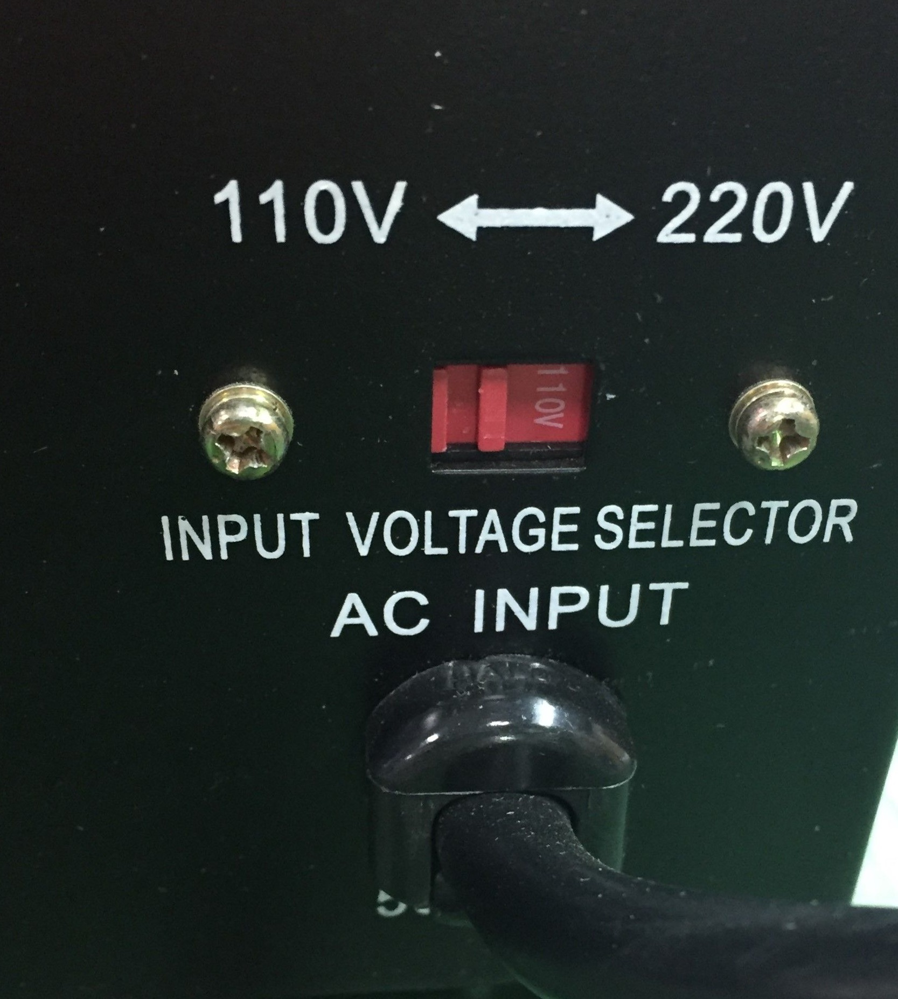

La supercomputadora
Elige tu propia aventura
El mes pasado ganaste un concurso de software y el premio acaba de llegar.
Eres el afortunado propietario de una computadora de sexta generación cuánticaCuanticomp AI 32, numero de serie 2183, de nombre Jarvis.
Acabas de montar la compu en la habitación. Al estar miniaturizada no es mucho mas grande que una heladera. Dispone de una interface semicircular, un reproductor holográfico y lo mas importante un modulo cerebral cuántico. Comienzas a estudiar el manual de instrucciones.
A diferencia de tus computadoras anteriores, la AI 32 es inteligente. Por este motivo no es necesario aprender “como funciona”. La propia computadora te enseñara como utilizarla. Basta con enchufarla y accionar el interruptor de energía, pero te das cuenta que el selector de voltaje tiene dos opciones, 110v o 220v.
